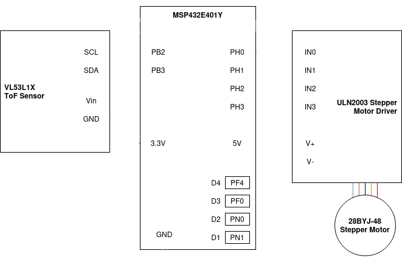
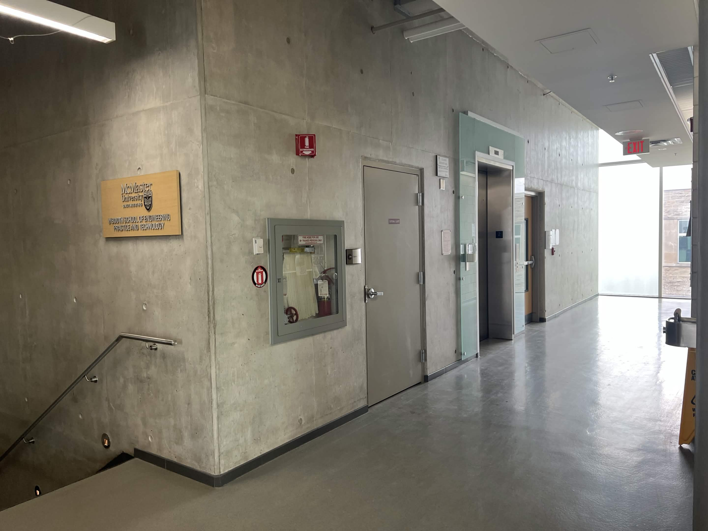
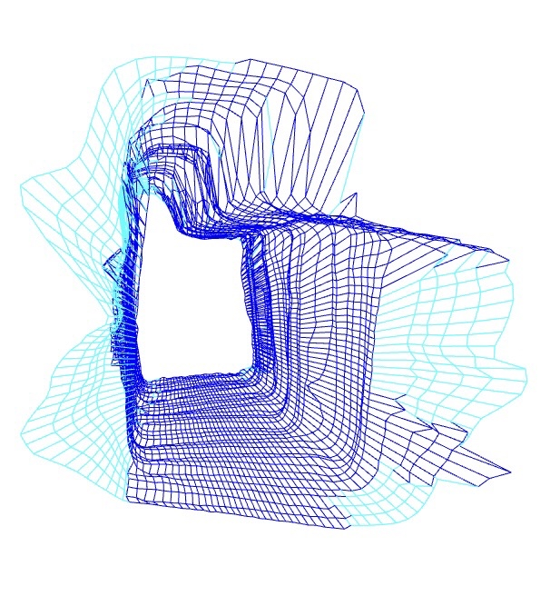
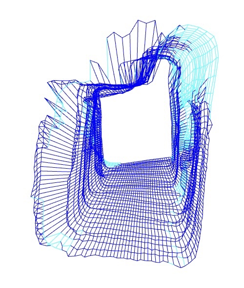
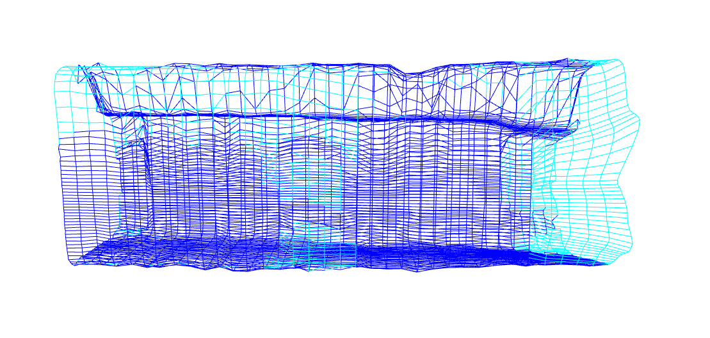
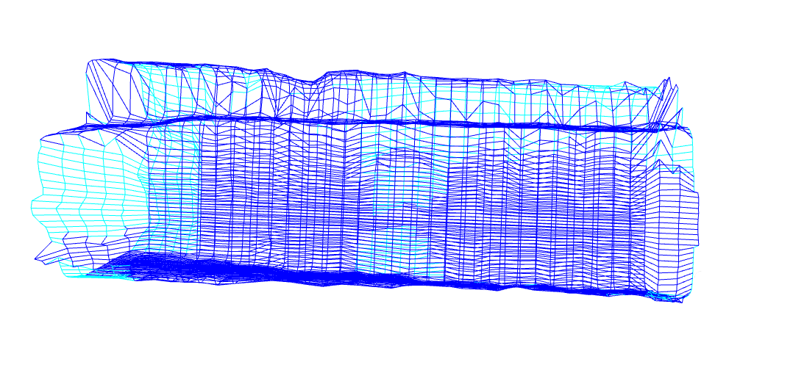

Overview
This device is an embedded spatial measurement system intended to be a cheaper and smaller-scaled LIDAR (Light Detection and Ranging) suitable for indoor usage. The center of the system is the Texas Instrument MSP432E401Y microcontroller, along with the VL53L1X Time of Flight Sensor that is mounted to the 28BYJ-48 Stepper Motor. Code is uploaded to the microcontroller using Keil MDK, and the visualization is generated using Python and the Open3D library
Features
Texas Instrument MSP432E401Y Microcontroller
- Cortex-M4F Processor Core with Floating Point Unit (FPU)
- 32 MHz Design Bus Speed
- 3 User LEDs to indicate device status
- 2 User buttons to control device
- Recommended operating supply voltage range 2.97V - 3.3V
VL53L1X Time of Flight (ToF) Sensor
- Range: 4cm to 4m
- Ranging frequency of 50Hz
- 2.6V to 3.5V operating range
28BYJ-48 Stepper Motor
- Unipolar, 4 steps per phase
- Ranging frequency of 50Hz
- 5V - 12V Supply Voltage
Serial Communication
- I2C protocol and ToF Sensor API used to communicate between ToF and MCU
- UART protocol and PySerial used between MCU and PC
- Baud Rate: 115200 BPS
3D Modeling
- Python script parses data and color codes points based on sensor accuracy
- Inaccurate points are interpolated
- Open3D is used to connect all points and visualize the graph
General Description
The device consists of 2 user buttons (PJ0 and PJ1) onboard to control data acquisition. PJ0 starts and stops data collection; its state can be observed on the onboard LED2 where on indicates that the device can begin scanning, and off indicates the end of data collection
Once the user turns on the device, PJ1 can be pressed to rotate the attached ToF sensor 360◦in the yz-plane. Each rotation takes 128 scans per rotation (distance measurement every 2.8125◦) where every measurement is indicated by a flash on onboard LED1. The distance, range status, and angle are transmitted to the PC through UART, which is indicated by a flash on onboard LED3 at the beginning of each transmission.
To prevent wires from tangling, the sensor rotates back to its original position after each rotation. This process is repeated until the user is finished scanning. Once PJ0 is pressed again to end the data acquisition process, the Python script will generate the 3D graph.
The 3D graph is generated by converting the distance measurements into (x, y, z) coordinates. The distance and angle are transmitted from the microcontroller to the Python program using PySerial. These values determines the y and z points, while the x coordinate is incremented by a fixed distance every rotation. All the points are then connected appropriately using the Open3D library.
Circuit Schematic

Application
The final device was used to scan a designated hallway within the university. Below, photos of the location and the final scan are provided.

Reference photos for front, left and right of the hallway
As seen in the scans below, the device is able to accurately capture the hallway while indicating and interpolating uncertain data. The light blue region represent the stairwell and window on the left and right sides which are unable to be properly sensed by the sensor due to being out-of-range or too bright. As for the other light blue section on the left side, it maps the location of the elevator which is very reflective, making it difficult for the sensor to obtain accurate data.
(The image used as the header for this project, seen at the very top of the page, is the scanned graph before interpolating. The red area is the unprocessed data from uncertain regions.)




3D visualization of hallway scan